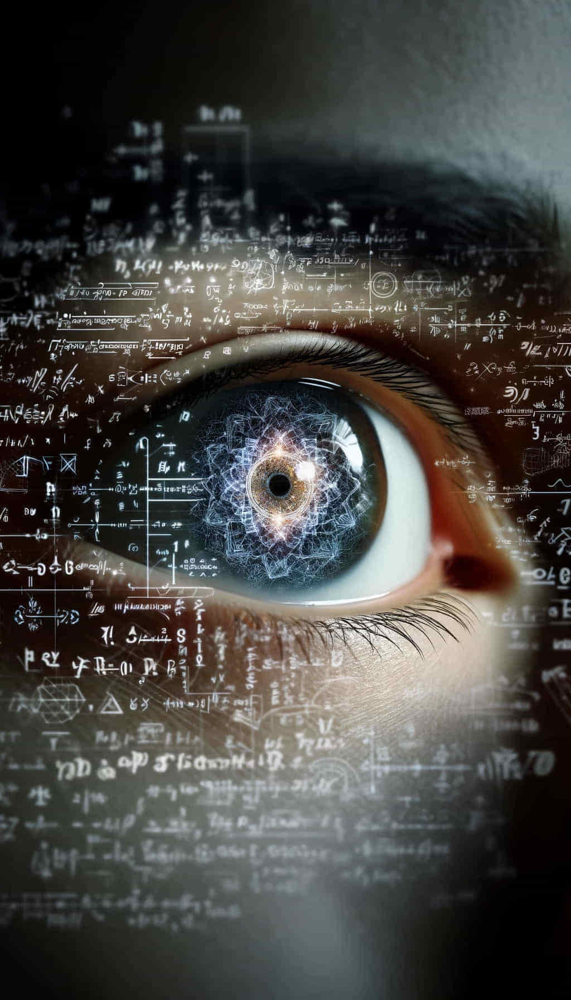

Consciousness Complexity: Resolving the Measurement Problem
Introduction
Consciousness Complexity emerges as a pioneering concept at the intersection of consciousness studies and quantum mechanics, proposing a measurable influence of consciousness on quantum measurement outcomes. This concept suggests that the depth of conscious experience directly affects these outcomes, offering a quantifiable measure of complexity. By linking subjective experience with observable physical phenomena, it challenges the traditional separation of mind and matter.
It offers a method to empirically assess the complexity of consciousness through its consistent impact on quantum probabilities, fundamentally reshaping our understanding of consciousness's role in the universe. This approach posits that consciousness itself may play a direct role in determining the state in which a quantum system settles post-measurement, suggesting a profound interconnection between observation and the observed, potentially providing a solution to the Measurement Problem.
Universe 00110000
The Measurement Problem in Quantum Mechanics
The Measurement Problem is a fundamental issue in quantum mechanics that arises from the apparent incompatibility between the deterministic evolution of quantum states according to the Schrödinger equation and the probabilistic nature of quantum measurement outcomes. In essence, it questions why and how a quantum system, which exists in a superposition of multiple states, collapses into a single definite state upon measurement.
The problem can be summarized as follows: Quantum systems are described by wave functions that evolve deterministically according to the Schrödinger equation. However, when a measurement is performed on a quantum system, the wave function appears to collapse into a single definite state, with probabilities given by the Born rule. The act of measurement seems to introduce a non-deterministic, irreversible change in the quantum system, which is not accounted for by the Schrödinger equation.
This apparent discrepancy between the continuous, deterministic evolution of quantum states and the discontinuous, probabilistic nature of measurement outcomes has been a source of ongoing debate and investigation in the foundations of quantum mechanics. Various interpretations of quantum mechanics, have been proposed to address the Measurement Problem, but a conclusive resolution remains elusive.
The Von Neumann–Wigner Interpretation and Consciousness Complexity
The Von Neumann–Wigner interpretation posits that consciousness is necessary for the collapse of the quantum wave function. It suggests that the act of observation by a conscious observer is essential for the wave function collapse to occur, thereby realizing one outcome from among the potential probabilities. However, it does not imply that consciousness changes the mathematical probabilities calculated according to quantum mechanics.
The Consciousness Complexity framework builds upon the Von Neumann–Wigner interpretation by proposing that conscious observers can not only cause the wave function collapse but also influence the probabilities of quantum measurement outcomes. This implies that the probabilities of the outcomes are not solely determined by the quantum wave function prior to measurement but can be affected by the consciousness complexity of the observer.
Quantifying Consciousness Complexity
To formalize the relationship between consciousness and quantum measurement probabilities, the Consciousness Complexity framework introduces an empirically grounded measure of consciousness complexity (CC). CC is defined as a measure of a system's ability to consistently influence the probabilities of quantum measurement outcomes.
For a given system S, its consciousness complexity CC(S) is defined as:
CC(S) = |P_obs(|1⟩) - P_Born(|1⟩)|
where P_obs(|1⟩) is the observed probability of measuring the quantum system in the |1⟩ state when interacting with system S, and P_Born(|1⟩) is the probability predicted by the Born rule.
This measure directly quantifies the degree to which a system can influence the probability of wavefunction collapse outcomes, with higher values indicating a greater level of consciousness complexity.
The Role of Consciousness Complexity in Quantum Measurements
The Consciousness Complexity framework proposes that the consciousness complexity of a system influences the probabilities of quantum measurement outcomes. Specifically, it postulates that the probability of obtaining an outcome |i⟩ when measuring a quantum state |ψ⟩ with a system S is given by:
P(|i⟩|S,|ψ⟩) = |⟨i|ψ⟩|^2 + f(CC(S), |⟨i|ψ⟩|^2)
where |⟨i|ψ⟩|^2 is the standard Born rule probability, and f(CC(S), |⟨i|ψ⟩|^2) is a function that depends on the consciousness complexity of the system S and the Born rule probability.
The function f(CC(S), |⟨i|ψ⟩|^2) quantifies the influence of consciousness on the measurement probabilities and satisfies specific properties, such as being zero for a system with zero consciousness complexity and being a monotonically increasing function of CC(S).
Universe 00110000
Implications for Idealism and the Nature of Consciousness
The Consciousness Complexity framework is consistent with the philosophical position of idealism, which holds that consciousness is fundamental and that the physical world is ultimately grounded in or dependent upon consciousness. In this view, the influence of consciousness on quantum measurement outcomes is not surprising, as consciousness is seen as the primary reality underlying all physical phenomena.
By providing a quantitative link between consciousness and the probabilistic nature of quantum measurements, the Consciousness Complexity framework supports the idea that consciousness plays a fundamental role in the universe.
Conclusion
The Consciousness Complexity framework presents a novel approach to resolving the quantum measurement problem by introducing an empirically grounded measure of consciousness complexity. By proposing that conscious observers can influence the probabilities of quantum measurement outcomes, it offers a quantitative link between consciousness and the probabilistic nature of quantum measurements.
This framework is consistent with the philosophical position of idealism, which holds that consciousness is fundamental and underlies all physical phenomena. It suggests that the deepest levels of reality are characterized by conscious experiences.
The Consciousness Complexity framework opens up new avenues for research in the foundations of quantum mechanics and the the nature of consciousness.